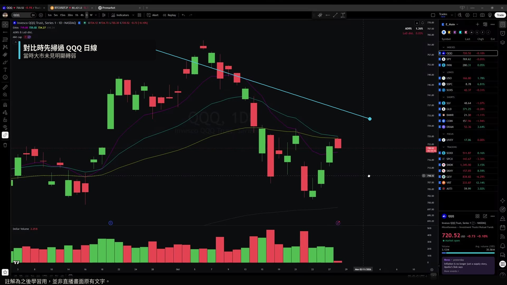
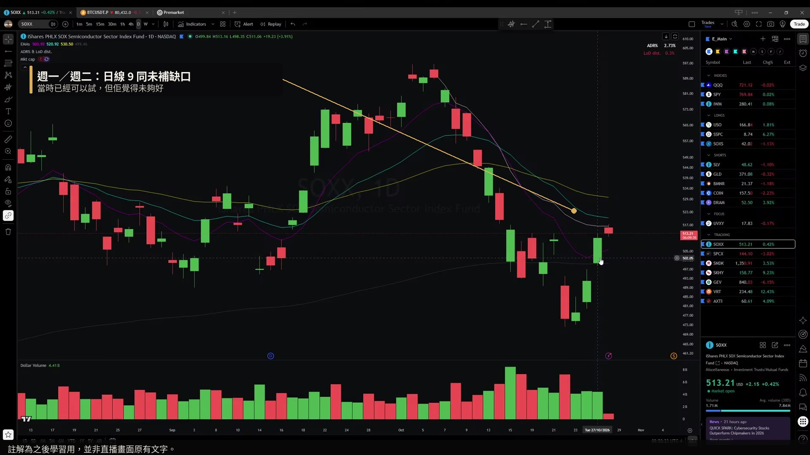
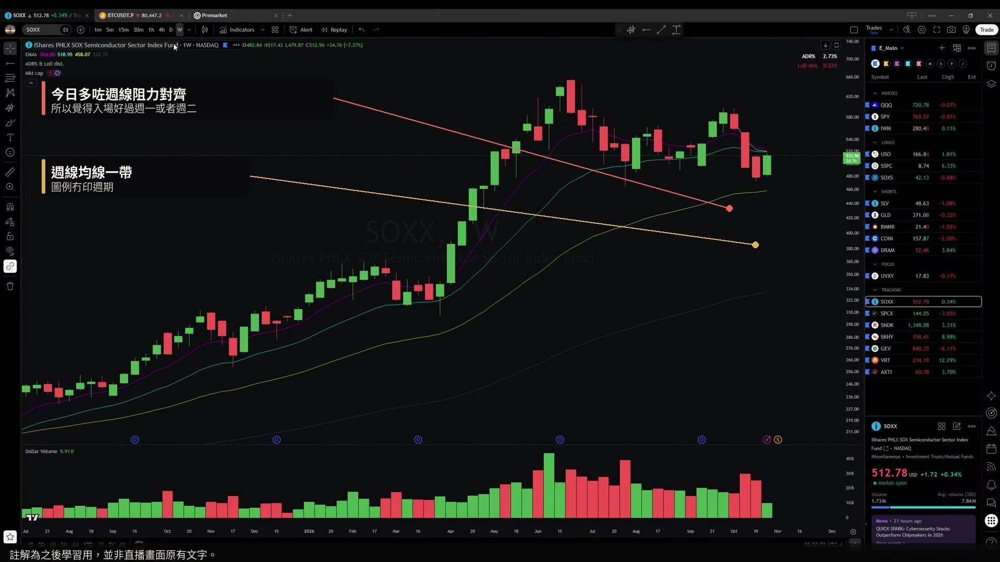

概要
同一方向，但今日位置更好
28:58 佢把今日同週一、週二比較：呢兩日都有日線 9 EMA 同未補缺口，當時仍然試過淡一啲，但主要把重點放喺 SpaceX。今日除咗呢啲，仲對齊週線阻力，所以覺得入場明顯更好。稍後補充：週一唔應該淡，週二試仍然合理，今日先係更好嘅一日；週二虧損可以接受，週一虧損認為本可避免。
呢段同時交代低勝率、高風險回報風格嘅難處，以及近日淡倉過急、輸過一輪。圖例冇印均線週期。
圖一
比較時先掃過 QQQ 日線
直播 28:40

原話
And it's actually, I think if you compare it to Monday and Tuesday, I still try to short some, but not really — I'm mainly focusing on SpaceX.
而且其實，如果你同週一、週二比較，我仍然試過淡一啲，但唔算真係主力。我主要係把重點放喺 SpaceX。
點樣讀
呢幅只係比較時嘅大市背景，重點仍然在 SOXX 日線同週線。
SpaceX 嘅相對弱勢見下一科。
圖二
週一週二已有日線 9 同未補缺口
直播 29:20

原話
But if you look at the semi sector as a whole, compared to Monday or maybe Tuesday, although it's like the daily 9 EMA and also this unfilled gap,
但如果你把半導體板塊整體睇，同週一或者週二比較，雖然都有日線 9 EMA，亦有呢個未補缺口，
點樣讀
日線 9 同未補缺口已經可以構成試淡理由，但佢用嚟說明呢兩日仲未夠好。
圖例冇印 9 嘅週期。
圖三 · 主圖
今日仲對齊週線阻力
直播 29:50

原話
but today it's actually aligning with the weekly resistance as well. Seems like yeah, this is a much better entry compared to Monday or Tuesday. Monday it shouldn't be a short, but Tuesday I think it makes sense to try, and today I think is the much better day. So I'm willing to take the losses on Tuesday, but the Monday losses can be avoidable, I think.
但今日其實仲對齊週線阻力。睇嚟係，呢個入場比週一或者週二好得多。週一唔應該淡，但週二我覺得試仍然合理，而今日我覺得係更好嘅一日。所以週二嘅虧損我願意接受，但週一嘅虧損我覺得本可避免。
Whisper 把 avoidable 聽成 affordable；按 YouTube 同語境更正。同一段稍早亦提到近日淡倉過急、輸過一輪，以及低勝率高風險回報風格嘅難處。
點樣讀
核心分別係多咗週線阻力對齊，所以今日勝率或者位置更好，而唔係方向突然唔同。
週一唔該淡、週二可以試，係事後回顧，唔好寫成固定日曆規則。
附註
注意事項
- 33:31 有觀眾問剛淡咗 LITE 同 SK Hynix，佢話今日淡倉日子幾好，甚至唔使開圖，但冇獨立拆呢兩隻，故唔另開一科。
- 畫面睇唔到損益，提到嘅虧損只保留原話。
免責聲明：呢份係教育拆解，唔係投資建議，亦唔好當作買賣指示。